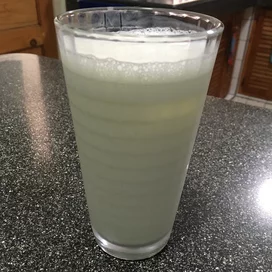

Back
Indian Lassi

Description
Here is a basic recipe for Indian Lassi (yogurt drink). You can add more or less yogurt or water for a thicker or
thinner beverage. For a salty lassi, you can substitute 1/2 teaspoon salt for the sugar. Garnish with fresh mint if
desired.
Ingredients
- 11/2 cup of yogurt
- 6 cube ice, crushed
- 11/2 cup of ice water
- 2 spoon of sugar
- 1 pinch salt
Steps
- In a blender, blend the yogurt, ice, water, sugar and salt until mixture becomes frothy.
- Pour mixture over ice cubes in tall glasses.
- Your home made lassi is ready to serve.
Nutrition Facts
- 50 calories
- 4 gm protien
- 6-7 gm carbohydrate
- 1 gm fat
- 50 mg sodium
- 4-4.5 mg colestrole